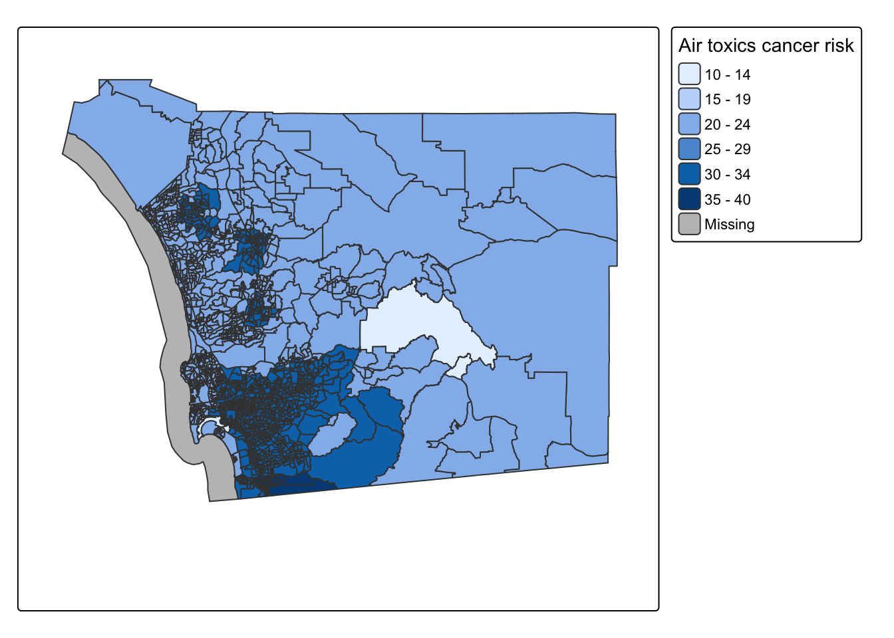
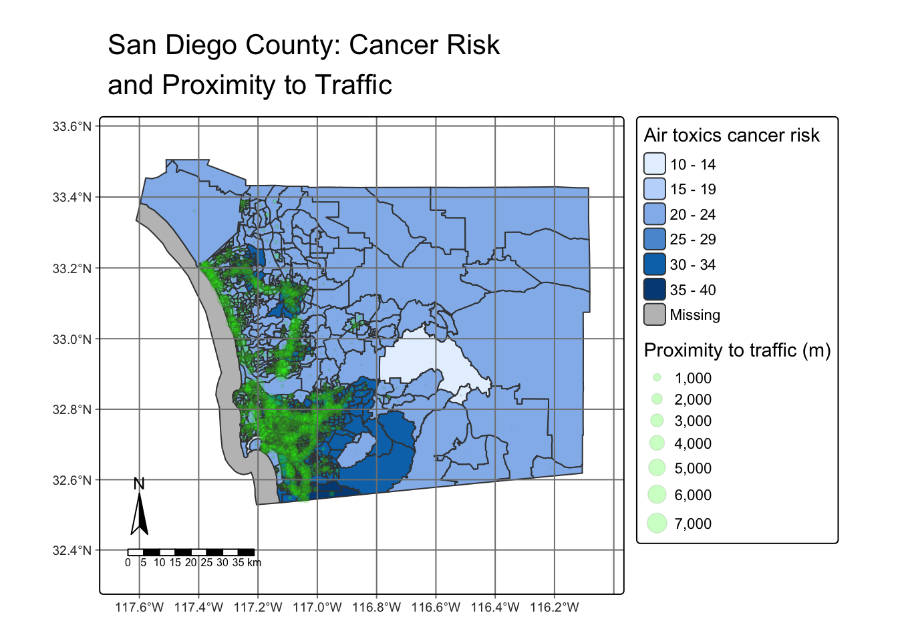
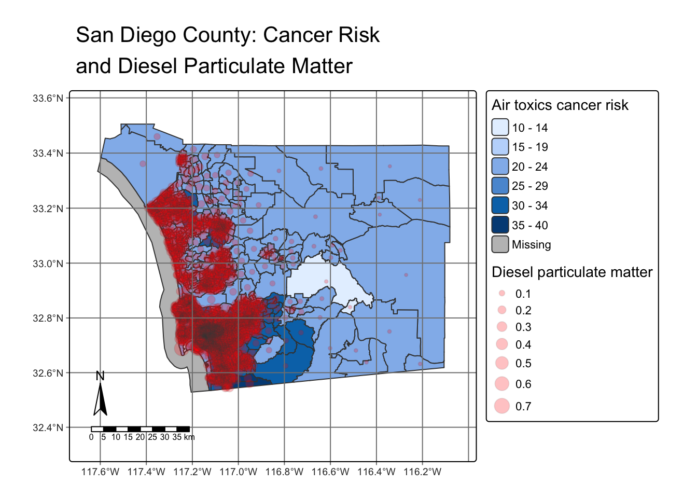
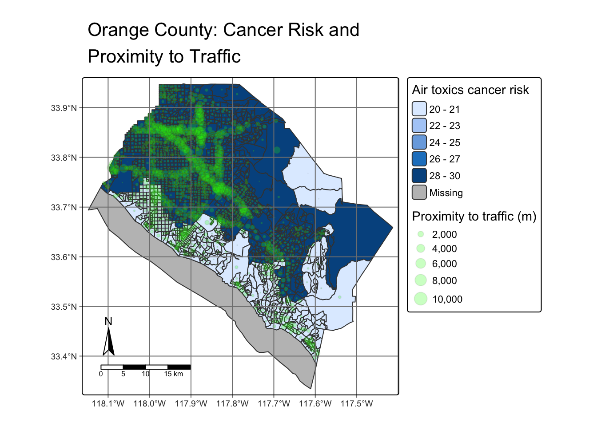

library(tidyverse)
library(stars)
library(here)
library(sf)
library(tmap)Homework Assignment 1
Map Making Practise
Load libraries and data
ejscreen <- st_read(here("data", "ejscreen","EJSCREEN_2023_BG_StatePct_with_AS_CNMI_GU_VI.gdb"))Filtering
For this assignment, I will be analysing San Diego and Orange County in California. Therefore, I’m taking a subsect of data for each county.
sandiego <- ejscreen |>
filter(STATE_NAME == "California") |>
filter(CNTY_NAME == "San Diego County")
orange <- ejscreen |>
filter(STATE_NAME == "California") |>
filter(CNTY_NAME == "Orange County")Relationship between air toxics cancer risk and proximity to traffic in San Diego County
Is there a correlation between cancer risks from carcinogens in ambient outdoor air and proximity to traffic in San Diego County?
tm_shape(sandiego , bbox = c(-117.7, 32.3, -116, 33.6)) +
tm_polygons(
"CANCER",
fill.legend = tm_legend(title = "Air toxics cancer risk", position = tm_pos_out("right"))
)Warning: Current projection unknown. Long lat coordinates (wgs84) assumed.
tm_shape(sandiego , bbox = c(-117.7, 32.3, -116, 33.6)) +
tm_polygons(
"CANCER",
fill.legend = tm_legend(title = "Air toxics cancer risk", position = tm_pos_out("right"))
) +
tm_symbols(
size = "PTRAF",
fill = "green",
size.legend = tm_legend(title = "Proximity to traffic (m)", position = tm_pos_out("right")),
fill_alpha = 0.25,
col_alpha = 0.1
) +
tm_title(text = "San Diego County: Cancer Risk \nand Proximity to Traffic") +
tm_compass(position = c("bottom","left")) +
tm_graticules() +
tm_scalebar(position = c("bottom","left"))
San Diego has three major highways: Interstate 5, 15, and 8 which runs along the coast, inland, and parallel to the border respectively. These can be seen with the density of green. It is no surprise that areas that have proximity to traffic also tends to have higher air toxic cancer risk. Majority of the population in San Diego live near the coast or downtown, where commute via car is common. According to the map, areas with proximity to traffic and higher risk of cancer from air toxics are near the coast and downtown. This could be a call for an increase in public transit and/or to encourage electric vehicle usage.
tm_shape(sandiego , bbox = c(-117.7, 32.3, -116, 33.6)) +
tm_polygons(
"CANCER",
fill.legend = tm_legend(title = "Air toxics cancer risk", position = tm_pos_out("right"))
) +
tm_symbols(
size = "DSLPM",
fill = "red",
size.legend = tm_legend(title = "Diesel particulate matter", position = tm_pos_out("right")),
fill_alpha = 0.25,
col_alpha = 0.1
) +
tm_title(text = "San Diego County: Cancer Risk \nand Diesel Particulate Matter") +
tm_compass(position = c("bottom","left")) +
tm_graticules() +
tm_scalebar(position = c("bottom","left"))
Relationship between air toxics cancer risk and proximity to traffic in Orange County
After exploring the relationship between risk of cancer due to air toxics and proximity to traffic in San Diego, how does it look like for Orange County?
tm_shape(orange) +
tm_polygons(
"CANCER",
fill.legend = tm_legend(title = "Air toxics cancer risk", position = tm_pos_out("right"))
) +
tm_symbols(
size = "PTRAF",
fill = "green",
size.legend = tm_legend(title = "Proximity to traffic (m)", position = tm_pos_out("right")),
fill_alpha = 0.25,
col_alpha = 0.1
) +
tm_title(text = "Orange County: Cancer Risk and \nProximity to Traffic") +
tm_compass(position = c("bottom","left")) +
tm_graticules() +
tm_scalebar(position = c("bottom","left"))
Now we look at the same metrics but for Orange County. According to the map, areas that have lower air toxics cancer risk are closer to the coast or near the Santa Ana Mountains. Areas that have proximity to traffic and high air toxics cancer risk are in northern Orange County, where there is a prominent grid structure for roads. The exception to this is in San Clemente and its surrounding areas, where the Insterstate 5 runs through the area. Similar to the map for San Diego, this could be a call for public transportation and/or electric vehicles incentives.